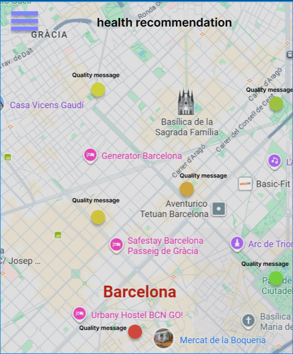

FR1. The app will display a simple and understandable air quality index (with colors and text labels) along with a health recommendation (“avoid intense outdoor exercise”) and a specific note for sensitive groups (children, elderly, people with asthma).
FR2. Each card will indicate which pollutant triggers the alert, the time of the last measurement, and the distance to the station used.
FR3. A short explanation of what the thresholds mean (WHO/EU references) will be provided, avoiding technical language.
FR4. Acceptance criteria: the user quickly understands whether today is a good or bad day for outdoor activities and why; source, time, and station are always visible.
FR5. The app will display a map that shows the city with different indications of the corresponding air qualities on different parts of the city.
FR6. A signal will be sent to the user whenever the app detects an increase in bad air quality on the area where the user resides or is located.
NFR1. The sharing location will be optional, with explicit consent and easy activation/deactivation.
NFR2. A manual selection of district/address will be available without sharing location.
NFR3. Data minimization will be applied so that only the necessary for alerts will be used; a clear and visible privacy policy will explain purpose, duration, and data sharing.
NFR4. The user will be able to turn alerts on and off, and adjust sensitivity for the alerts (high, medium-high...).
NFR5. The user can configure the frequency of alerts, and scope (current location, home, work).
NFR6. Content will be written in clear language, available at least in Spanish and English.
NFR7. Icons and text will have good contrast and alternatives for color-blind users.
NFR8. The app will always show official data source, reuse license, date/time of update, station used, and known limitations.
